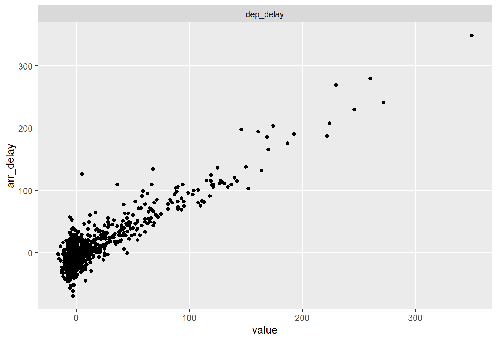
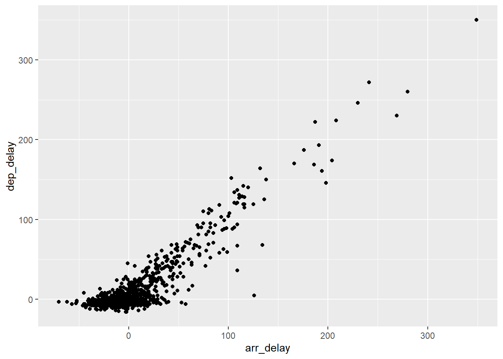
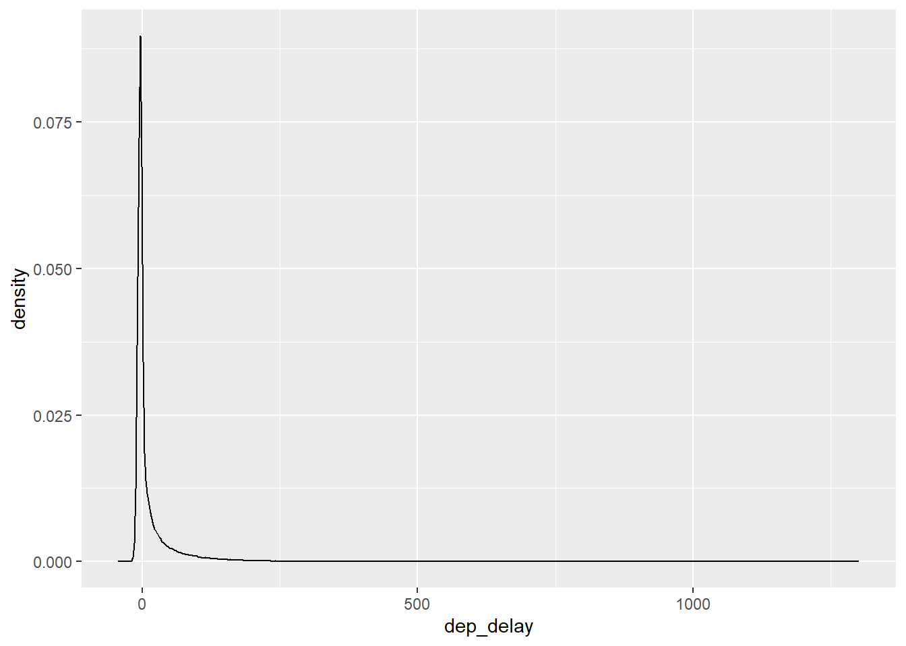
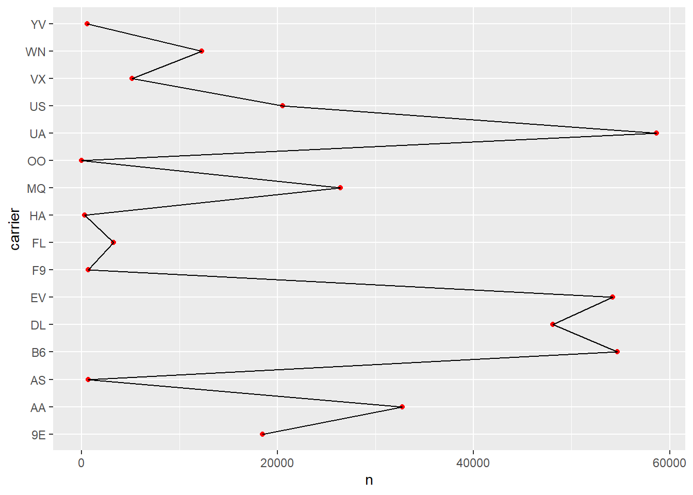
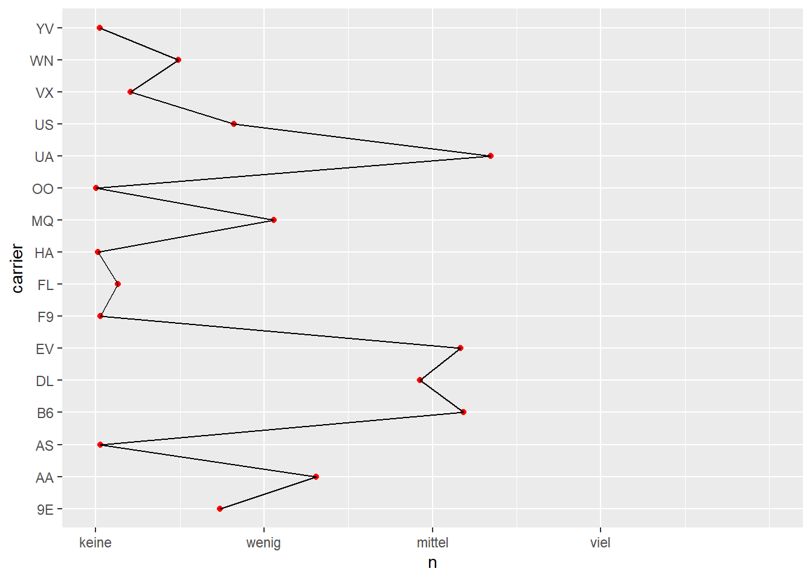
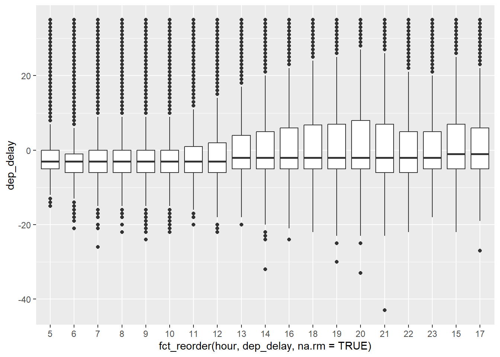
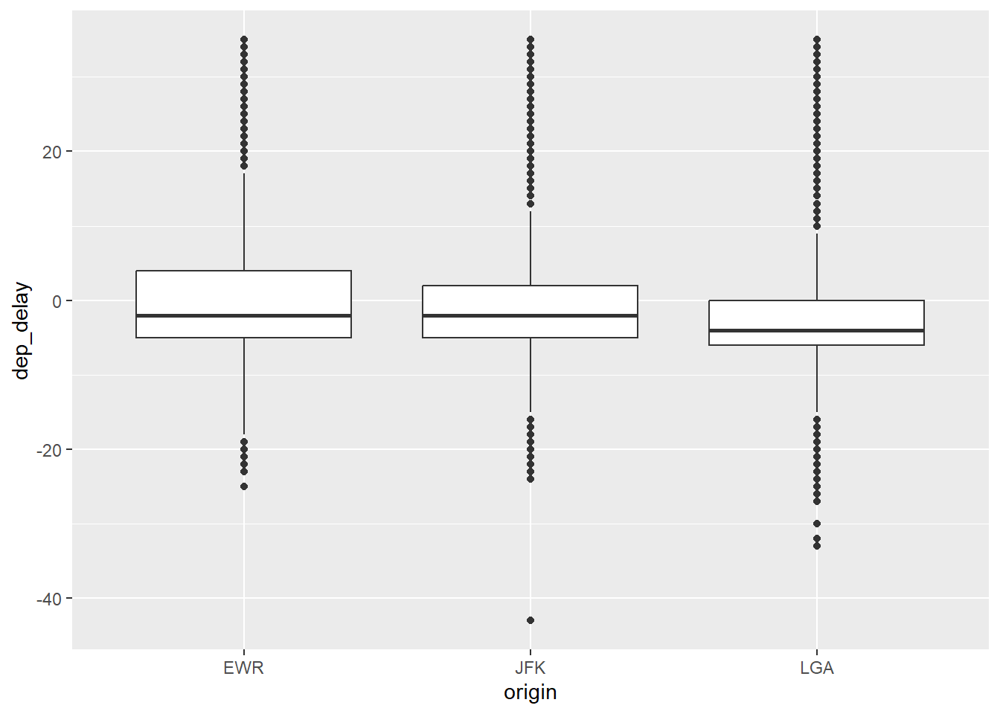
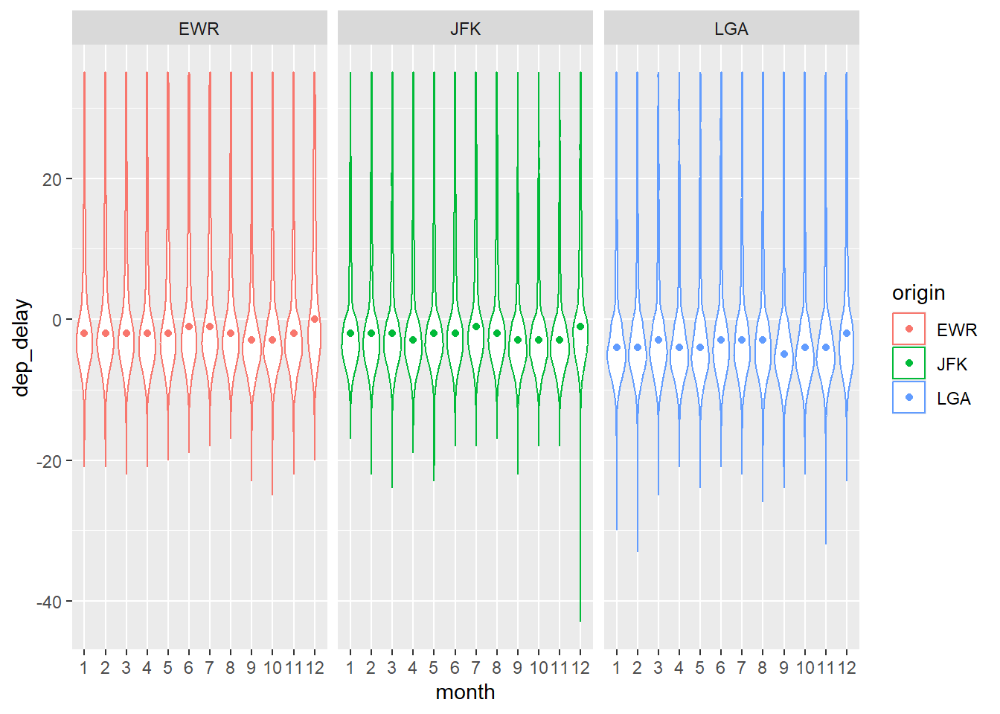

library(tidyverse) # data wrangling
library(fastDummies) # nur für "Dummyisierung"
library(easystats) # komfortabel Statistiken ausrechnen
library(DataExplorer) # Daten visualisieren
library(ggpubr) # Daten visualisierenflights-yacsda-eda
eda
yacsda
variability
association
1 Hintergrund und Ziel
Diese Fallstudie zeigt einige mögliche/typische Schritte der explorativen Datenanalyse (EDA) im Hinblick auf die Forschungsfrage “Welche Variablen steht in Zusammenhang mit Flugverspätungen?”.
2 Pakete laden
3 Daten laden
Der Datensatz kann z.B. hier bezogen werden:
flights <- read.csv("https://vincentarelbundock.github.io/Rdatasets/csv/nycflights13/flights.csv")Alternativ findet man den Datensatz auch im Paket nycflights13 (das man vorab installiert haben muss).
data(flights, package = "nycflights13")Der Datensatz ist relativ groß:
dim(flights)[1] 336776 19Das sind 19 Variablen, über 300.000 Zeilen.
4 Was ist Verspätung?
Schauen wir uns den Datensatz mal näher an, um die Zielvariable “Verspätung” zu beleuchten.
glimpse(flights)Rows: 336,776
Columns: 19
$ year <int> 2013, 2013, 2013, 2013, 2013, 2013, 2013, 2013, 2013, 2…
$ month <int> 1, 1, 1, 1, 1, 1, 1, 1, 1, 1, 1, 1, 1, 1, 1, 1, 1, 1, 1…
$ day <int> 1, 1, 1, 1, 1, 1, 1, 1, 1, 1, 1, 1, 1, 1, 1, 1, 1, 1, 1…
$ dep_time <int> 517, 533, 542, 544, 554, 554, 555, 557, 557, 558, 558, …
$ sched_dep_time <int> 515, 529, 540, 545, 600, 558, 600, 600, 600, 600, 600, …
$ dep_delay <dbl> 2, 4, 2, -1, -6, -4, -5, -3, -3, -2, -2, -2, -2, -2, -1…
$ arr_time <int> 830, 850, 923, 1004, 812, 740, 913, 709, 838, 753, 849,…
$ sched_arr_time <int> 819, 830, 850, 1022, 837, 728, 854, 723, 846, 745, 851,…
$ arr_delay <dbl> 11, 20, 33, -18, -25, 12, 19, -14, -8, 8, -2, -3, 7, -1…
$ carrier <chr> "UA", "UA", "AA", "B6", "DL", "UA", "B6", "EV", "B6", "…
$ flight <int> 1545, 1714, 1141, 725, 461, 1696, 507, 5708, 79, 301, 4…
$ tailnum <chr> "N14228", "N24211", "N619AA", "N804JB", "N668DN", "N394…
$ origin <chr> "EWR", "LGA", "JFK", "JFK", "LGA", "EWR", "EWR", "LGA",…
$ dest <chr> "IAH", "IAH", "MIA", "BQN", "ATL", "ORD", "FLL", "IAD",…
$ air_time <dbl> 227, 227, 160, 183, 116, 150, 158, 53, 140, 138, 149, 1…
$ distance <dbl> 1400, 1416, 1089, 1576, 762, 719, 1065, 229, 944, 733, …
$ hour <dbl> 5, 5, 5, 5, 6, 5, 6, 6, 6, 6, 6, 6, 6, 6, 6, 5, 6, 6, 6…
$ minute <dbl> 15, 29, 40, 45, 0, 58, 0, 0, 0, 0, 0, 0, 0, 0, 0, 59, 0…
$ time_hour <dttm> 2013-01-01 05:00:00, 2013-01-01 05:00:00, 2013-01-01 0…Es gibt zwei Spalten, die auf Verspätung hinzielen:
flights %>%
select(dep_delay, arr_delay) %>%
head()| dep_delay | arr_delay |
|---|---|
| 2 | 11 |
| 4 | 20 |
| 2 | 33 |
| -1 | -18 |
| -6 | -25 |
| -4 | 12 |
Man könnte auch schreiben, alternativ:
- Hey R,
- Nimm die Tabelle
flightsund dann - wähle alle Spalten aus, die den Text “delay” enthalten und dann
- zeige den Anfang (“Kopf”) der Tabelle
flights %>%
select(contains("delay")) %>%
head()| dep_delay | arr_delay |
|---|---|
| 2 | 11 |
| 4 | 20 |
| 2 | 33 |
| -1 | -18 |
| -6 | -25 |
| -4 | 12 |
Ein Blick in die Hilfe lässt uns mehr lernen, was die Spalten bedeuten: help(flights) (wenn das Paket nycflights13 geladen ist; alternativ kann man z.B. hier nachlesen):
dep_delay, arr_delay
Departure and arrival delays, in minutes.
Negative times represent early departures/arrivals.4.1 Wie ähnlich sind Ankunfts- und Abflugsverspätung?
Da der Datensatz so groß ist, ziehen wir eine Stichprobe (mit sample_n), dann geht alles schneller. Hier nicht wichtig, nur um etwas Zeit beim Plotten zu sparen. In der Praxis würde ich in an dieser Stelle keine Stichprobe ziehen, bzw. mit dem Gesamtdatensatz weiterarbeiten (was wir ja auch im Folgenden tun).
flights_sample <-
flights |>
sample_n(size = 1000) 4.1.1 Diagramm mit DataExplorer
flights_sample |>
select(dep_delay, arr_delay) |>
plot_scatterplot(by = "arr_delay")
4.1.2 Diagramm mit ggplot
flights_sample |>
ggplot() +
aes(y = dep_delay, x = arr_delay) +
geom_point()
4.1.3 Statistiken
flights %>%
drop_na(dep_delay, arr_delay) %>%
summarise(sd(dep_delay),
sd(arr_delay))| sd(dep_delay) | sd(arr_delay) |
|---|---|
| 40.06569 | 44.63329 |
Das sind ca. 10% Differenz in der Skalierung; wir können die Skalierung komplett angleichen, um Abweichungen, die auf unterschiedlichen Mustern beruhen, besser zu sehen. Dazu hilft uns die z-Transformation.
Die beiden Variablen scheinen ziemlich stark korreliert zu sein.
flights %>%
drop_na(dep_delay, arr_delay) %>%
summarise(cor(dep_delay, arr_delay))| cor(dep_delay, arr_delay) |
|---|
| 0.9148028 |
Ja, sind sie. Dann ist es vielleicht egal, welche der beiden Variablen wir verwenden. Nehmen wir dep_delay.
4.1.4 Vertiefung: z-Skalierung
flights %>%
select(contains("delay")) %>%
drop_na() %>%
mutate(dep_delay = scale(dep_delay), # z-Transformation
arr_delay = scale(arr_delay)) %>% # z-Transformation
ggplot() +
aes(x = arr_delay, y = dep_delay) +
geom_bin2d() +
geom_abline(linetype = "dashed",
color = "grey60")bin2d wurde hier nur aus dem Grund verwendet, da das Plotten von ein paar Hunderttausend Punkte recht lange dauert. bin2d hingegen ist sehr schnell.
5 Verteilung der Verspätung
5.1 Visualisierung
flights |>
select(dep_delay) |>
plot_density()flights %>%
ggplot() +
aes(x = dep_delay) %>%
geom_density()
Ein sehr langer rechter Rand; die meisten Flüge sind nicht/kaum verspätet; aber einige wenige sind sehr stark verspätet.
Zentrale deskriptive Statistiken könnte man sich mit summary ausgeben lassen:
flights %>%
filter(!is.na(dep_delay)) %>% # keine fehlenden Werte
summarise(depdelay_mean = mean(dep_delay),
depdelay_sd = sd(dep_delay),
depdelay_md = median(dep_delay),
depdelay_iqr = IQR(dep_delay)) | depdelay_mean | depdelay_sd | depdelay_md | depdelay_iqr |
|---|---|---|---|
| 12.63907 | 40.21006 | -2 | 16 |
5.1.1 Vertiefung: Wiederholung mit across
Oder man benutzt den Befehl across, der es erlaubt, eine oder mehrere Funktionen auf eine oder mehrere Spalten wiederholtanzuwenden (Man spricht von einer “Schleife”). In diesem Beispiel wenden wir mehrere Funktionen (adressiert mit .fns) auf eine Spalte (dep_delay), adressiert mit dem Argument .cols an. Außerdem kann man die Namen der resultierenden Spalten bestimmen mit dem Argument .names. In der geschweiften Klammer steht eine interne Variable, die den Namen der jeweils berechneten Funktion ({fn}) an den Namen der neu erstellten Spalte anfügt; in der Ausgabe sieht man das gut.
flights %>%
summarise(across(
.cols = dep_delay,
.fns = list(mean = mean,
md = median,
sd = sd,
iqr = IQR), na.rm = TRUE,
.names = "depdelay_{fn}"
))| depdelay_mean | depdelay_md | depdelay_sd | depdelay_iqr |
|---|---|---|---|
| 12.63907 | -2 | 40.21006 | 16 |
5.2 flights2: Extremwerte (der Verspätung) definieren
Es gibt keinen sicheren Weg, mit Extremwerten umzugehen. Häufig macht es Sinn, die Ergebnisse mehrerer Analysen zu vergleichen mit, oder ohne Extremwerten.
“Wann ist ein Flug sehr verspätet?
5.2.1 Boxplot-Methode
Eine Möglichkeit ist die “Boxplot-Methode”: Entferne alle Flüge, die mehr verspätet sind als als das 1.5-fache der IQR über dem 3. Quartil (75. Perzentil): \(q75+1.5iqr\)
Berechnen wir zunächst das 75. Perzentil (3. Quartil):
flights %>%
summarise(q75 = quantile(dep_delay,
prob = .75,
na.rm = TRUE))| q75 |
|---|
| 11 |
Das sind also etwa 11 Minuten, die die Grenzlinie zwischen den 75% weniger bzw. den 25% stärker verspäteten Flügen markieren.
Dann berechnen wir den IQR:
flights %>%
summarise(depdelay_iqr = IQR(dep_delay, na.rm = TRUE))| depdelay_iqr |
|---|
| 16 |
Der Grenzwert liegt dem zufolge bei:
grenzwert <- 11 + 1.5*16Das ist kein “gottgegebener” Wert, sondern ein pragmatischer Versuch, einen Grenzwert zu finden. Die Nützlichkeit dieses Grenzwerts müsste sich noch erweisen. Viele andere Grenzwerte lassen sich verteidigen.
flights2 <-
flights %>%
mutate(is_extreme = case_when(
dep_delay > 11 + 1.5 * 16 ~ TRUE, # Verspätung > 35 Min.
dep_delay <= 35 ~ FALSE # in den anderen Fällen (<= 35 Min.), dann kein Extremwert
))5.3 Fehlende Werte berechnen
Wie viele fehlende Werte gibt es eigentlich in dep_delay?
flights |>
describe_distribution(dep_delay)| Variable | Mean | SD | IQR | Min | Max | Skewness | Kurtosis | n | n_Missing |
|---|---|---|---|---|---|---|---|---|---|
| dep_delay | 12.63907 | 40.21006 | 16 | -43 | 1301 | 4.802541 | 43.95012 | 328521 | 8255 |
Alternativ, und weniger komfortabel könnte man sagen
- Hey R,
- nimm die Tabelle
flightsund dann - fasse die Spalte
dep_delayzu einer Zahl zusammen und zwar - anhand der Summe (
sum) der fehlenden Werten (is.na)
flights %>%
summarise(sum(is.na(dep_delay))) # fehlende Werte zählen| sum(is.na(dep_delay)) |
|---|
| 8255 |
Wie viele Fälle gingen verloren, wenn wir die Fälle mit fehlenden Werten bei dep_delay entfernten?
flights %>%
drop_na(dep_delay) %>%
nrow()[1] 328521Und wenn wir alle fehlenden Werte entfernen würden?
flights %>%
drop_na() %>%
nrow()[1] 327346Wir verlieren nicht viele Fälle mehr, wenn wir die fehlenden Werte aller Variablen (Spalten) entfernen. Also machen wir das mal.
5.3.1 Vertiefung: across
So bekommt man die fehlenden Werte für alle Spalten auf einmal:
flights %>%
summarise(across(everything(), ~ sum(is.na(.x))))| year | month | day | dep_time | sched_dep_time | dep_delay | arr_time | sched_arr_time | arr_delay | carrier | flight | tailnum | origin | dest | air_time | distance | hour | minute | time_hour |
|---|---|---|---|---|---|---|---|---|---|---|---|---|---|---|---|---|---|---|
| 0 | 0 | 0 | 8255 | 0 | 8255 | 8713 | 0 | 9430 | 0 | 0 | 2512 | 0 | 0 | 9430 | 0 | 0 | 0 | 0 |
Ehrlicherweise muss man sagen, dass man mit describe_distribution auch komfortabel die fehlenden Werte für alle Spalten bekommt.
5.4 flights3
Achtung: dieses Vorgehen hier ist gefährlich. U.U. verliert man sehr viele Zeilen (Beobachtungen).
flights3 <-
flights2 %>%
drop_na() %>%
select(-year)Die Spalte year ist kontant (immer der Wert “2013”); daher ist die Spalte nutzlos, sie birgt keine Information. Wir können sie gefahrlos löschen.
6 Deskriptive Statistiken
6.1 Mit summarise
Das kann machen mit summarise. Einfach, kann aber viel Tipperei bedeuten:
flights2 %>%
summarise(mean(dep_delay),
sd(dep_delay),
mean(arr_delay),
sd(arr_delay)) # und so weiter| mean(dep_delay) | sd(dep_delay) | mean(arr_delay) | sd(arr_delay) |
|---|---|---|---|
| NA | NA | NA | NA |
6.2 Mit describe_distribution
describe_distribution ist sehr praktisch; man bekommt viele Statistiken auf einmal gezeigt; das spart viel Tipperei.
flights %>%
describe_distribution()| Variable | Mean | SD | IQR | Min | Max | Skewness | Kurtosis | n | n_Missing |
|---|---|---|---|---|---|---|---|---|---|
| year | 2013.000000 | 0.000000 | 0 | 2013 | 2013 | NaN | NaN | 336776 | 0 |
| month | 6.548510 | 3.414457 | 6 | 1 | 12 | -0.0133999 | -1.1869501 | 336776 | 0 |
| day | 15.710787 | 8.768607 | 15 | 1 | 31 | 0.0077445 | -1.1859454 | 336776 | 0 |
| dep_time | 1349.109947 | 488.281791 | 837 | 1 | 2400 | -0.0247435 | -1.0883200 | 328521 | 8255 |
| sched_dep_time | 1344.254840 | 467.335756 | 823 | 106 | 2359 | -0.0058581 | -1.1979031 | 336776 | 0 |
| dep_delay | 12.639070 | 40.210061 | 16 | -43 | 1301 | 4.8025405 | 43.9501160 | 328521 | 8255 |
| arr_time | 1502.054999 | 533.264132 | 836 | 1 | 2400 | -0.4678191 | -0.1926344 | 328063 | 8713 |
| sched_arr_time | 1536.380220 | 497.457141 | 821 | 1 | 2359 | -0.3531381 | -0.3822478 | 336776 | 0 |
| arr_delay | 6.895377 | 44.633292 | 31 | -86 | 1272 | 3.7168175 | 29.2330440 | 327346 | 9430 |
| flight | 1971.923620 | 1632.471938 | 2912 | 1 | 8500 | 0.6616036 | -0.8485607 | 336776 | 0 |
| air_time | 150.686460 | 93.688305 | 110 | 20 | 695 | 1.0707052 | 0.8630770 | 327346 | 9430 |
| distance | 1039.912604 | 733.233033 | 887 | 17 | 4983 | 1.1286902 | 1.1936399 | 336776 | 0 |
| hour | 13.180247 | 4.661316 | 8 | 1 | 23 | -0.0005427 | -1.2064161 | 336776 | 0 |
| minute | 26.230100 | 19.300846 | 36 | 0 | 59 | 0.0929309 | -1.2350180 | 336776 | 0 |
7 Korrelate von Verspätung
Schauen wir, welche Variablen mit dep_delay, der Verspätung der Flüge also, korrelieren.
7.1 Metrische Prädiktoren
7.1.1 Nur mit cor
Am einfachsten geht es so. Der Nachteil ist mehr (viel) Tipperei:
flights3 %>%
select(where(is.numeric)) %>% # wähle alle numerischen Spalten
summarise(cor_month = cor(dep_delay, month),
cor_day = cor(dep_delay, day),
cor_dep_time = cor(dep_delay, dep_time)) # etc| cor_month | cor_day | cor_dep_time |
|---|---|---|
| -0.0200547 | 0.0005914 | 0.2596127 |
7.1.2 Mit easystats
flights |>
select(where(is.numeric)) %>%
correlation()| Parameter1 | Parameter2 | r | CI | CI_low | CI_high | t | df_error | p | Method | n_Obs |
|---|---|---|---|---|---|---|---|---|---|---|
| year | month | NA | 0.95 | NA | NA | NA | 336774 | NA | Pearson correlation | 336776 |
| year | day | NA | 0.95 | NA | NA | NA | 336774 | NA | Pearson correlation | 336776 |
| year | dep_time | NA | 0.95 | NA | NA | NA | 328519 | NA | Pearson correlation | 328521 |
| year | sched_dep_time | NA | 0.95 | NA | NA | NA | 336774 | NA | Pearson correlation | 336776 |
| year | dep_delay | NA | 0.95 | NA | NA | NA | 328519 | NA | Pearson correlation | 328521 |
| year | arr_time | NA | 0.95 | NA | NA | NA | 328061 | NA | Pearson correlation | 328063 |
| year | sched_arr_time | NA | 0.95 | NA | NA | NA | 336774 | NA | Pearson correlation | 336776 |
| year | arr_delay | NA | 0.95 | NA | NA | NA | 327344 | NA | Pearson correlation | 327346 |
| year | flight | NA | 0.95 | NA | NA | NA | 336774 | NA | Pearson correlation | 336776 |
| year | air_time | NA | 0.95 | NA | NA | NA | 327344 | NA | Pearson correlation | 327346 |
| year | distance | NA | 0.95 | NA | NA | NA | 336774 | NA | Pearson correlation | 336776 |
| year | hour | NA | 0.95 | NA | NA | NA | 336774 | NA | Pearson correlation | 336776 |
| year | minute | NA | 0.95 | NA | NA | NA | 336774 | NA | Pearson correlation | 336776 |
| month | day | 0.0029423 | 0.95 | -0.0004350 | 0.0063197 | 1.7075186 | 336774 | 1.0000000 | Pearson correlation | 336776 |
| month | dep_time | -0.0039324 | 0.95 | -0.0073519 | -0.0005129 | -2.2539453 | 328519 | 0.3388037 | Pearson correlation | 328521 |
| month | sched_dep_time | -0.0045726 | 0.95 | -0.0079499 | -0.0011953 | -2.6536338 | 336774 | 0.1274143 | Pearson correlation | 336776 |
| month | dep_delay | -0.0200570 | 0.95 | -0.0234749 | -0.0166386 | -11.4983104 | 328519 | 0.0000000 | Pearson correlation | 328521 |
| month | arr_time | -0.0025199 | 0.95 | -0.0059418 | 0.0009020 | -1.4433357 | 328061 | 1.0000000 | Pearson correlation | 328063 |
| month | sched_arr_time | -0.0041727 | 0.95 | -0.0075500 | -0.0007954 | -2.4215548 | 336774 | 0.2318219 | Pearson correlation | 336776 |
| month | arr_delay | -0.0173820 | 0.95 | -0.0208064 | -0.0139572 | -9.9464509 | 327344 | 0.0000000 | Pearson correlation | 327346 |
| month | flight | -0.0008341 | 0.95 | -0.0042114 | 0.0025433 | -0.4840347 | 336774 | 1.0000000 | Pearson correlation | 336776 |
| month | air_time | 0.0109242 | 0.95 | 0.0074988 | 0.0143493 | 6.2505247 | 327344 | 0.0000000 | Pearson correlation | 327346 |
| month | distance | 0.0216356 | 0.95 | 0.0182596 | 0.0250112 | 12.5585894 | 336774 | 0.0000000 | Pearson correlation | 336776 |
| month | hour | -0.0052274 | 0.95 | -0.0086046 | -0.0018501 | -3.0336183 | 336774 | 0.0410819 | Pearson correlation | 336776 |
| month | minute | 0.0155277 | 0.95 | 0.0121509 | 0.0189040 | 9.0121387 | 336774 | 0.0000000 | Pearson correlation | 336776 |
| day | dep_time | -0.0004674 | 0.95 | -0.0038869 | 0.0029522 | -0.2678812 | 328519 | 1.0000000 | Pearson correlation | 328521 |
| day | sched_dep_time | -0.0000144 | 0.95 | -0.0033917 | 0.0033630 | -0.0083485 | 336774 | 1.0000000 | Pearson correlation | 336776 |
| day | dep_delay | 0.0004200 | 0.95 | -0.0029995 | 0.0038395 | 0.2407375 | 328519 | 1.0000000 | Pearson correlation | 328521 |
| day | arr_time | -0.0055369 | 0.95 | -0.0089587 | -0.0021151 | -3.1714238 | 328061 | 0.0273074 | Pearson correlation | 328063 |
| day | sched_arr_time | -0.0024028 | 0.95 | -0.0057801 | 0.0009746 | -1.3943765 | 336774 | 1.0000000 | Pearson correlation | 336776 |
| day | arr_delay | -0.0003192 | 0.95 | -0.0037448 | 0.0031065 | -0.1826024 | 327344 | 1.0000000 | Pearson correlation | 327346 |
| day | flight | -0.0017908 | 0.95 | -0.0051681 | 0.0015866 | -1.0392164 | 336774 | 1.0000000 | Pearson correlation | 336776 |
| day | air_time | 0.0022364 | 0.95 | -0.0011893 | 0.0056620 | 1.2795263 | 327344 | 1.0000000 | Pearson correlation | 327346 |
| day | distance | 0.0030413 | 0.95 | -0.0003361 | 0.0064186 | 1.7649426 | 336774 | 1.0000000 | Pearson correlation | 336776 |
| day | hour | -0.0000553 | 0.95 | -0.0034326 | 0.0033221 | -0.0320789 | 336774 | 1.0000000 | Pearson correlation | 336776 |
| day | minute | 0.0009867 | 0.95 | -0.0023907 | 0.0043640 | 0.5725883 | 336774 | 1.0000000 | Pearson correlation | 336776 |
| dep_time | sched_dep_time | 0.9546169 | 0.95 | 0.9543125 | 0.9549192 | 1837.0937739 | 328519 | 0.0000000 | Pearson correlation | 328521 |
| dep_time | dep_delay | 0.2602312 | 0.95 | 0.2570404 | 0.2634164 | 154.4779649 | 328519 | 0.0000000 | Pearson correlation | 328521 |
| dep_time | arr_time | 0.6607789 | 0.95 | 0.6588467 | 0.6627023 | 504.2386087 | 328061 | 0.0000000 | Pearson correlation | 328063 |
| dep_time | sched_arr_time | 0.7846824 | 0.95 | 0.7833648 | 0.7859929 | 725.5275036 | 328519 | 0.0000000 | Pearson correlation | 328521 |
| dep_time | arr_delay | 0.2323057 | 0.95 | 0.2290624 | 0.2355439 | 136.6497146 | 327344 | 0.0000000 | Pearson correlation | 327346 |
| dep_time | flight | 0.0419571 | 0.95 | 0.0385431 | 0.0453701 | 24.0695668 | 328519 | 0.0000000 | Pearson correlation | 328521 |
| dep_time | air_time | -0.0146195 | 0.95 | -0.0180442 | -0.0111944 | -8.3652793 | 327344 | 0.0000000 | Pearson correlation | 327346 |
| dep_time | distance | -0.0139982 | 0.95 | -0.0174169 | -0.0105792 | -8.0240834 | 328519 | 0.0000000 | Pearson correlation | 328521 |
| dep_time | hour | 0.9533056 | 0.95 | 0.9529927 | 0.9536165 | 1809.2355940 | 328519 | 0.0000000 | Pearson correlation | 328521 |
| dep_time | minute | 0.0915767 | 0.95 | 0.0881848 | 0.0949665 | 52.7101121 | 328519 | 0.0000000 | Pearson correlation | 328521 |
| sched_dep_time | dep_delay | 0.1988867 | 0.95 | 0.1956002 | 0.2021688 | 116.3188193 | 328519 | 0.0000000 | Pearson correlation | 328521 |
| sched_dep_time | arr_time | 0.6426802 | 0.95 | 0.6406672 | 0.6446843 | 480.4710020 | 328061 | 0.0000000 | Pearson correlation | 328063 |
| sched_dep_time | sched_arr_time | 0.7833425 | 0.95 | 0.7820341 | 0.7846440 | 731.3355602 | 336774 | 0.0000000 | Pearson correlation | 336776 |
| sched_dep_time | arr_delay | 0.1738962 | 0.95 | 0.1705721 | 0.1772163 | 101.0322717 | 327344 | 0.0000000 | Pearson correlation | 327346 |
| sched_dep_time | flight | 0.0364947 | 0.95 | 0.0331214 | 0.0398672 | 21.1928124 | 336774 | 0.0000000 | Pearson correlation | 336776 |
| sched_dep_time | air_time | -0.0155321 | 0.95 | -0.0189568 | -0.0121071 | -8.8876246 | 327344 | 0.0000000 | Pearson correlation | 327346 |
| sched_dep_time | distance | -0.0179950 | 0.95 | -0.0213710 | -0.0146185 | -10.4445684 | 336774 | 0.0000000 | Pearson correlation | 336776 |
| sched_dep_time | hour | 0.9991483 | 0.95 | 0.9991425 | 0.9991540 | 14051.7706130 | 336774 | 0.0000000 | Pearson correlation | 336776 |
| sched_dep_time | minute | 0.0829598 | 0.95 | 0.0796047 | 0.0863129 | 48.3099293 | 336774 | 0.0000000 | Pearson correlation | 336776 |
| dep_delay | arr_time | 0.0287288 | 0.95 | 0.0253094 | 0.0321476 | 16.4616791 | 328061 | 0.0000000 | Pearson correlation | 328063 |
| dep_delay | sched_arr_time | 0.1604885 | 0.95 | 0.1571552 | 0.1638181 | 93.1945228 | 328519 | 0.0000000 | Pearson correlation | 328521 |
| dep_delay | arr_delay | 0.9148028 | 0.95 | 0.9142422 | 0.9153599 | 1295.8504088 | 327344 | 0.0000000 | Pearson correlation | 327346 |
| dep_delay | flight | 0.0547337 | 0.95 | 0.0513238 | 0.0581424 | 31.4185914 | 328519 | 0.0000000 | Pearson correlation | 328521 |
| dep_delay | air_time | -0.0224051 | 0.95 | -0.0258288 | -0.0189809 | -12.8220570 | 327344 | 0.0000000 | Pearson correlation | 327346 |
| dep_delay | distance | -0.0216708 | 0.95 | -0.0250885 | -0.0182526 | -12.4238721 | 328519 | 0.0000000 | Pearson correlation | 328521 |
| dep_delay | hour | 0.1982259 | 0.95 | 0.1949385 | 0.2015089 | 115.9165150 | 328519 | 0.0000000 | Pearson correlation | 328521 |
| dep_delay | minute | 0.0284409 | 0.95 | 0.0250238 | 0.0318573 | 16.3079309 | 328519 | 0.0000000 | Pearson correlation | 328521 |
| arr_time | sched_arr_time | 0.7889971 | 0.95 | 0.7877018 | 0.7902853 | 735.5354750 | 328061 | 0.0000000 | Pearson correlation | 328063 |
| arr_time | arr_delay | 0.0244821 | 0.95 | 0.0210582 | 0.0279055 | 14.0114093 | 327344 | 0.0000000 | Pearson correlation | 327346 |
| arr_time | flight | 0.0250418 | 0.95 | 0.0216217 | 0.0284613 | 14.3475801 | 328061 | 0.0000000 | Pearson correlation | 328063 |
| arr_time | air_time | 0.0542960 | 0.95 | 0.0508798 | 0.0577110 | 31.1108134 | 327344 | 0.0000000 | Pearson correlation | 327346 |
| arr_time | distance | 0.0469912 | 0.95 | 0.0435763 | 0.0504051 | 26.9447568 | 328061 | 0.0000000 | Pearson correlation | 328063 |
| arr_time | hour | 0.6426514 | 0.95 | 0.6406383 | 0.6446556 | 480.4342878 | 328061 | 0.0000000 | Pearson correlation | 328063 |
| arr_time | minute | 0.0409691 | 0.95 | 0.0375524 | 0.0443848 | 23.4854231 | 328061 | 0.0000000 | Pearson correlation | 328063 |
| sched_arr_time | arr_delay | 0.1332613 | 0.95 | 0.1298949 | 0.1366246 | 76.9302376 | 327344 | 0.0000000 | Pearson correlation | 327346 |
| sched_arr_time | flight | 0.0215937 | 0.95 | 0.0182176 | 0.0249692 | 12.5342010 | 336774 | 0.0000000 | Pearson correlation | 336776 |
| sched_arr_time | air_time | 0.0789183 | 0.95 | 0.0755131 | 0.0823217 | 45.2935710 | 327344 | 0.0000000 | Pearson correlation | 327346 |
| sched_arr_time | distance | 0.0687259 | 0.95 | 0.0653637 | 0.0720865 | 39.9777082 | 336774 | 0.0000000 | Pearson correlation | 336776 |
| sched_arr_time | hour | 0.7832825 | 0.95 | 0.7819738 | 0.7845843 | 731.1906842 | 336774 | 0.0000000 | Pearson correlation | 336776 |
| sched_arr_time | minute | 0.0503212 | 0.95 | 0.0469518 | 0.0536895 | 29.2395738 | 336774 | 0.0000000 | Pearson correlation | 336776 |
| arr_delay | flight | 0.0728621 | 0.95 | 0.0694537 | 0.0762687 | 41.7983960 | 327344 | 0.0000000 | Pearson correlation | 327346 |
| arr_delay | air_time | -0.0352971 | 0.95 | -0.0387181 | -0.0318753 | -20.2074620 | 327344 | 0.0000000 | Pearson correlation | 327346 |
| arr_delay | distance | -0.0618678 | 0.95 | -0.0652796 | -0.0584545 | -35.4649465 | 327344 | 0.0000000 | Pearson correlation | 327346 |
| arr_delay | hour | 0.1734556 | 0.95 | 0.1701310 | 0.1767762 | 100.7683213 | 327344 | 0.0000000 | Pearson correlation | 327346 |
| arr_delay | minute | 0.0215222 | 0.95 | 0.0180979 | 0.0249460 | 12.3165691 | 327344 | 0.0000000 | Pearson correlation | 327346 |
| flight | air_time | -0.4728384 | 0.95 | -0.4754938 | -0.4701743 | -307.0191395 | 327344 | 0.0000000 | Pearson correlation | 327346 |
| flight | distance | -0.4841654 | 0.95 | -0.4867468 | -0.4815755 | -321.1194483 | 336774 | 0.0000000 | Pearson correlation | 336776 |
| flight | hour | 0.0358380 | 0.95 | 0.0324646 | 0.0392106 | 20.8109689 | 336774 | 0.0000000 | Pearson correlation | 336776 |
| flight | minute | 0.0181366 | 0.95 | 0.0147602 | 0.0215127 | 10.5268290 | 336774 | 0.0000000 | Pearson correlation | 336776 |
| air_time | distance | 0.9906496 | 0.95 | 0.9905857 | 0.9907132 | 4154.4244720 | 327344 | 0.0000000 | Pearson correlation | 327346 |
| air_time | hour | -0.0162773 | 0.95 | -0.0197018 | -0.0128523 | -9.3141118 | 327344 | 0.0000000 | Pearson correlation | 327346 |
| air_time | minute | 0.0170318 | 0.95 | 0.0136070 | 0.0204563 | 9.7459979 | 327344 | 0.0000000 | Pearson correlation | 327346 |
| distance | hour | -0.0188605 | 0.95 | -0.0222364 | -0.0154841 | -10.9470924 | 336774 | 0.0000000 | Pearson correlation | 336776 |
| distance | minute | 0.0197798 | 0.95 | 0.0164035 | 0.0231556 | 11.4809042 | 336774 | 0.0000000 | Pearson correlation | 336776 |
| hour | minute | 0.0417676 | 0.95 | 0.0383957 | 0.0451386 | 24.2598646 | 336774 | 0.0000000 | Pearson correlation | 336776 |
7.1.3 Vertiefung: Mit across
Berechnen wir die Korrelationen jetzt mit dem Befehl across. Der Punkt . spricht hier jeweils eine Spalte an, die von across ausgewählt wurde. Der Effekt ist, dass eine Korrelation von jeder Spalte mit dep_delay berechnet wird.
flights3 %>%
select(where(is.numeric)) %>% # nur die numerischen Spalten auswählen
summarise(across(
.cols = everything(),
.fns = ~ cor(., dep_delay))) %>%
pivot_longer(everything()) %>% # von breit auf lang
arrange(-value) # absteigend sortieren| name | value |
|---|---|
| dep_delay | 1.0000000 |
| arr_delay | 0.9148028 |
| dep_time | 0.2596127 |
| sched_dep_time | 0.1989235 |
| hour | 0.1982692 |
| sched_arr_time | 0.1604972 |
| flight | 0.0539697 |
| arr_time | 0.0294210 |
| minute | 0.0282514 |
| day | 0.0005914 |
| month | -0.0200547 |
| distance | -0.0216809 |
| air_time | -0.0224051 |
7.2 Nominale Prädiktoren
7.2.1 Welche nominalen Prädiktoren gibt es?
Hey R, wähle alle nicht numerischen Spalten aus und sage mir deren Namen:
flights2 %>%
select(where(negate(is.numeric))) %>%
names()[1] "carrier" "tailnum" "origin" "dest" "time_hour"
[6] "is_extreme"Jetzt kann man für jede nominale Variable die Anzahl der unterschiedlichen Ausprägungen abfragen:
flights2 %>%
summarise(n_distinct(carrier))| n_distinct(carrier) |
|---|
| 16 |
7.2.2 Carrier
carrier meint die Fluggesellschaft, die den jeweiligen Flug durchgeführt hat. Da stellen sich eine Reihe interessanter Fragen:
- Wie viele verschiedene Fluggesellschaften gibt es?
- Wie viele Flüge hat jede davon ausgeführt?
- Welche Fluggesellschaft hat die meisten Flüge ausgeführt?
- Gibt es große Unterschiede in de Zahl der ausgeführten Flüge.
- Wer hat eigentlich die flüssige Seife erfunden?
Fragen über Fragen…
flights2_count <-
flights2 %>%
select(carrier) %>%
count(carrier, sort = TRUE)
flights2_count| carrier | n |
|---|---|
| UA | 58665 |
| B6 | 54635 |
| EV | 54173 |
| DL | 48110 |
| AA | 32729 |
| MQ | 26397 |
| US | 20536 |
| 9E | 18460 |
| WN | 12275 |
| VX | 5162 |
| FL | 3260 |
| AS | 714 |
| F9 | 685 |
| YV | 601 |
| HA | 342 |
| OO | 32 |
Wir brauchen eine Visualisierung dazu; das beantwortet vielleicht einen Teil der obigen Fragen.
7.2.3 Visualisierung von carrier
7.2.4 Mit DataExplorer
flights2_count |>
plot_scatterplot(by = "n")7.2.5 Mit ggplot
plot1 <-
flights2_count |>
ggplot() +
aes(y = carrier, x = n) +
geom_point(color = "red") +
geom_line(group = 1)
plot1
Wir müssen die Werte von carrier sortieren anhand der Anzahl der Flüge, sonst ist es zu unübersichtlich.
7.2.6 Vertiefung: Achsen-Labels anpassen
Dieser Abschnitt ist zur Vertiefung, er ist nicht inhaltlich wichtig
Sagen wir, wir möchten die Labels der X-Achse anpassen, und zwar möchten wir die Werte 25.000, 50.000, und 75.0000.
plot1 +
scale_x_continuous(breaks = c(0, 25000, 50000, 75000),
limits = c(0, 100000),
labels = c("keine", "wenig", "mittel", "viel"))
Hm, schön sieht es noch nicht aus; die limits machen nicht unbedingt Sinn. Die labels sind auch wenig sinnvoll.
Mehr zum Thema “Achsen aufhübschen” findet sich z.B. hier.
7.2.7 “Lumpsensammler-Kategorie”
flights2 <-
flights2 %>%
mutate(carrier = factor(carrier)) %>% # nicht `character`, sondern `factor` wollen
mutate(carrier_lump = fct_lump(carrier, n = 8)) Hier fassen wir mit fct_lump alle Stufen von carrier zu acht Stufen (daher n = 8) zusammen plus einer “Lumpensammler-Kategorie” zusammen. Dazu muss die Variable aber als factor vorliegen, was wir in der Zeile davor erledigt haben.
Jetzt haben wir noch nur 9 (8 plus Lumpensammler-Gruppe) Gruppen:
flights2_lump_count <-
flights2 %>%
# select(carrier) %>%
# mutate(carrier_lump = fct_lump(carrier, n = 8)) |>
count(carrier_lump, sort = TRUE)
flights2_lump_count| carrier_lump | n |
|---|---|
| UA | 58665 |
| B6 | 54635 |
| EV | 54173 |
| DL | 48110 |
| AA | 32729 |
| MQ | 26397 |
| Other | 23071 |
| US | 20536 |
| 9E | 18460 |
7.2.8 Visualisierung der Lumpensammler
flights2_count <-
flights2_count |>
mutate(carrier = fct_reorder(carrier, n)) |>
count(carrier, sort = TRUE)Mit fct_reorder haben wir die Werte von carrier (UA, B6, AA, …) sortiert und zwar anhand der Werte von n, also anhand der Häufigkeit. Es resultiert eine Rangfolge: UA > B6 > EV > DL > ... etc. (Nur) Mit einer sortierten Faktorvariable lässt sich entsprechendes Diagramm gut sortiert darstellen.
7.2.8.1 Mit ggplot
Liniendiagramm:
flights2_lump_count |>
ggplot() +
aes(y = carrier_lump, x = n) +
geom_point(color = "red") +
geom_line(group = 1)Ah, schon besser. Aber recht informationsarm, das Diagramm. Informationsreicher als das Liniendiagramm ist ein Boxplot:
flights2 %>%
filter(!is_extreme) %>%
ggplot() +
aes(x = carrier_lump,
y = dep_delay) %>%
geom_boxplot()Eine alternative Darstellung wäre ein Letter Value Plot.
Schauen wir uns mal die Mediane genauer an:
flights2 %>%
filter(!is_extreme) %>%
group_by(carrier_lump) %>%
summarise(dep_delay = median(dep_delay, na.rm = TRUE)) %>%
arrange(dep_delay)| carrier_lump | dep_delay |
|---|---|
| US | -5 |
| MQ | -4 |
| 9E | -3 |
| AA | -3 |
| DL | -3 |
| EV | -3 |
| B6 | -2 |
| UA | -1 |
| Other | 0 |
Die Reihenfolge entspricht der dem obigen Diagramm.
7.3 Korrelation von carrier mit Verspätung
Hier mit “Dummysierung” aller nicht-numerischer Spalten. Ein Beispiel zur Verdeutlichung:
flights2 <-
flights2 %>%
mutate(
originJFK = case_when(
origin == "JFK" ~ 1, # "1" wenn JFK,
origin != "JFK" ~ 0 # ansonsten 0
),
originLGA = case_when(
origin == "LGA" ~ 1, # "1" wenn LGA,
TRUE ~ 0, # in allen anderen Fällen ("TRUE") 0
)
)flights2 %>%
select(origin, originJFK, originLGA) %>%
slice(1:5)| origin | originJFK | originLGA |
|---|---|---|
| EWR | 0 | 0 |
| LGA | 0 | 1 |
| JFK | 1 | 0 |
| JFK | 1 | 0 |
| LGA | 0 | 1 |
Diese Art der Umwandlung von mehrstufig-nominal in eine binäre Variable (0-1-Variable, oder “Indikatorvariable”) kann man sich auch z.B. mit der Funktion dummy_cols() (aus dem Paket fastDummies) bewerkstelligen lassen:
flights2 %>%
select(origin, dep_delay) %>%
dummy_cols() %>% # aus dem Paket `fastDummies`
head() # slice(1:6)| origin | dep_delay | origin_EWR | origin_JFK | origin_LGA |
|---|---|---|---|---|
| EWR | 2 | 1 | 0 | 0 |
| LGA | 4 | 0 | 0 | 1 |
| JFK | 2 | 0 | 1 | 0 |
| JFK | -1 | 0 | 1 | 0 |
| LGA | -6 | 0 | 0 | 1 |
| EWR | -4 | 1 | 0 | 0 |
Mit den “dummyisierten” Spalten können wir jetzt Korrelationen rechnen, denn jetzt haben wir Zahlen. Achtung: Die Variablen bleiben nominalskaliert, trotz der 0-1-Transformation. Auf diese Art Korrelationen zu berechnen ist nur für dummysierte Variablen (“Indikatorvariablen”) sinnvoll. Die Schiefe der Verteilung begrenzt hier übrigens die Stärke der Korrelation.
flights2 %>%
select(dep_delay, carrier) %>%
dummy_cols() %>% # "Dummysierung"
select(-carrier) %>%
pivot_longer(-dep_delay,
names_to = "carrier",
values_to = "value") %>%
group_by(carrier) %>%
summarise(cor_depdelay_carrier = cor(dep_delay, value,
use = "complete.obs")) %>%
arrange(-abs(cor_depdelay_carrier)) %>%
filter(abs(cor_depdelay_carrier) > 0.10)| carrier | cor_depdelay_carrier |
|---|
Keine Korrelation war (im Betrag) größer als 0.1. Also gab es nur vernachlässigbare Korrelationen und im Output wurde daher nichts angezeigt.
Zur Erinnerung: Es ist nicht unbedingt nötig, die “Dummyisierung” durchzuführen, ein einfaches Vergleichen der Mittelwerte (oder Mediane) mit ihrer Streuung führt zu einem ähnlichen Ergebnis. Die Regression mit lm führt für Sie automatisch die Dummyisierung durch.
7.3.1 Hour
7.3.1.1 Mit ggplot
flights2 %>%
filter(!is_extreme) %>%
select(dep_delay, hour) %>%
mutate(hour = factor(hour)) %>%
ggplot() +
aes(x = fct_reorder(hour, dep_delay,
na.rm = TRUE),
y = dep_delay) +
geom_boxplot()
7.3.1.2 Mit DataExplorer
flights2 %>%
filter(!is_extreme) %>%
select(dep_delay, hour) %>%
mutate(hour = factor(hour)) %>%
plot_boxplot(by = "hour")7.3.2 Origin
7.3.2.1 Mit ggplot
flights2 %>%
filter(!is_extreme) %>%
select(origin, dep_delay) %>%
ggplot() +
aes(x = origin, y = dep_delay) %>%
geom_boxplot()
7.3.2.2 Mit DataExplorer
flights2 %>%
filter(!is_extreme) %>%
select(origin, dep_delay) %>%
plot_boxplot(by = "origin")7.4 Drei Variablen: Origin, hour, dep_delay
7.4.0.1 Mit ggplot
flights2 %>%
filter(!is_extreme) %>%
select(origin, dep_delay, hour) %>%
mutate(hour = factor(hour, levels = 5:23)) %>%
ggplot() +
aes(x = hour, y = dep_delay) +
geom_boxplot() +
facet_wrap(~ origin)7.4.0.2 Mit ggpubr
flights2 %>%
filter(!is_extreme) %>%
select(origin, dep_delay, hour) %>%
mutate(hour = factor(hour, levels = 5:23)) %>%
ggboxplot(x = "hour", y = "dep_delay", facet.by = "origin")
7.5 Vertiefung: Alle nominale Variablen
Natürlich könnte man “händisch” alle nominalskalierten Variablen explizit benennen, etwa so:
flights3 %>%
select(carrier, tailnum, origin, dest, time_hour) %>%
slice(1:3)| carrier | tailnum | origin | dest | time_hour |
|---|---|---|---|---|
| UA | N14228 | EWR | IAH | 2013-01-01 05:00:00 |
| UA | N24211 | LGA | IAH | 2013-01-01 05:00:00 |
| AA | N619AA | JFK | MIA | 2013-01-01 05:00:00 |
Aber es geht auch etwas “cooler” mit weniger Tipperei:
flights3 %>%
select(where(~ !is.numeric(.))) %>% # wähle alle nicht-numerischen Spalten
names()[1] "carrier" "tailnum" "origin" "dest" "time_hour"
[6] "is_extreme"7.5.1 flights4
flights4 <-
flights3 %>%
mutate(dest = fct_lump_prop(dest, prop = .025)) Mit fct_lump_prop fassen wir alle Stufen zu einer zusammen, die jeweils weniger als 2.5% der Fääle ausmachen.
flights4 %>%
count(dest, sort = T)| dest | n |
|---|---|
| Other | 172061 |
| ATL | 16837 |
| ORD | 16566 |
| LAX | 16026 |
| BOS | 15022 |
| MCO | 13967 |
| CLT | 13674 |
| SFO | 13173 |
| FLL | 11897 |
| MIA | 11593 |
| DCA | 9111 |
| DTW | 9031 |
| DFW | 8388 |
7.5.2 Visualisierung im Grid
flights4 %>%
filter(!is_extreme) %>%
select(dep_delay, dest, origin, carrier) %>%
group_by(dest, origin, carrier) %>%
summarise(depdelay_md = median(dep_delay, na.rm = T)) %>%
ggplot() +
aes(x = origin, y = depdelay_md, color = origin) +
facet_grid(dest ~ carrier) +
geom_point()Puh, das Diagramm ist nicht sehr aussagekräftig. Vielleicht besser als Tabelle?
flights4 %>%
filter(!is_extreme) %>%
select(dep_delay, dest, origin, carrier) %>%
group_by(dest, origin, carrier) %>%
summarise(depdelay_md = median(dep_delay, na.rm = T))| dest | origin | carrier | depdelay_md |
|---|---|---|---|
| ATL | EWR | 9E | -6.0 |
| ATL | EWR | DL | -3.0 |
| ATL | EWR | EV | -2.0 |
| ATL | EWR | UA | -1.0 |
| ATL | JFK | 9E | -2.0 |
| ATL | JFK | DL | -1.0 |
| ATL | LGA | DL | -3.0 |
| ATL | LGA | EV | 30.0 |
| ATL | LGA | FL | 0.0 |
| ATL | LGA | MQ | -4.0 |
| ATL | LGA | WN | -1.0 |
| BOS | EWR | B6 | -6.0 |
| BOS | EWR | EV | -2.5 |
| BOS | EWR | UA | -1.0 |
| BOS | JFK | 9E | -3.0 |
| BOS | JFK | AA | -3.0 |
| BOS | JFK | B6 | -2.0 |
| BOS | JFK | DL | -3.0 |
| BOS | LGA | US | -7.0 |
| CLT | EWR | EV | -2.0 |
| CLT | EWR | UA | -2.5 |
| CLT | EWR | US | -4.0 |
| CLT | JFK | 9E | -2.0 |
| CLT | JFK | B6 | -2.0 |
| CLT | JFK | US | -3.0 |
| CLT | LGA | 9E | -2.0 |
| CLT | LGA | EV | -3.0 |
| CLT | LGA | MQ | -4.0 |
| CLT | LGA | US | -4.0 |
| CLT | LGA | YV | -6.0 |
| DCA | EWR | EV | -2.0 |
| DCA | EWR | UA | 3.0 |
| DCA | JFK | 9E | -3.0 |
| DCA | JFK | DL | -4.5 |
| DCA | JFK | MQ | -4.0 |
| DCA | LGA | US | -5.0 |
| DFW | EWR | AA | -4.0 |
| DFW | EWR | UA | -2.0 |
| DFW | JFK | 9E | -1.0 |
| DFW | JFK | AA | -1.0 |
| DFW | LGA | 9E | -3.5 |
| DFW | LGA | AA | -4.0 |
| DFW | LGA | EV | 1.0 |
| DTW | EWR | 9E | -4.0 |
| DTW | EWR | DL | -4.0 |
| DTW | EWR | EV | -3.0 |
| DTW | EWR | OO | -9.0 |
| DTW | EWR | UA | -4.0 |
| DTW | JFK | 9E | -1.0 |
| DTW | JFK | DL | -2.0 |
| DTW | LGA | 9E | -6.5 |
| DTW | LGA | DL | -3.0 |
| DTW | LGA | EV | 1.0 |
| DTW | LGA | MQ | -6.0 |
| FLL | EWR | B6 | -3.0 |
| FLL | EWR | UA | 0.0 |
| FLL | JFK | AA | -3.0 |
| FLL | JFK | B6 | -1.0 |
| FLL | JFK | DL | -2.0 |
| FLL | LGA | B6 | -4.0 |
| FLL | LGA | DL | -3.0 |
| LAX | EWR | AA | -4.0 |
| LAX | EWR | UA | 0.0 |
| LAX | EWR | VX | -2.0 |
| LAX | JFK | AA | -3.0 |
| LAX | JFK | B6 | -2.0 |
| LAX | JFK | DL | -2.0 |
| LAX | JFK | UA | -2.0 |
| LAX | JFK | VX | 0.0 |
| MCO | EWR | B6 | -4.0 |
| MCO | EWR | UA | -1.0 |
| MCO | JFK | AA | -3.0 |
| MCO | JFK | B6 | -1.0 |
| MCO | JFK | DL | -3.0 |
| MCO | LGA | B6 | -5.0 |
| MCO | LGA | DL | -3.0 |
| MIA | EWR | AA | -3.0 |
| MIA | EWR | UA | -1.0 |
| MIA | JFK | AA | -2.0 |
| MIA | JFK | DL | -2.0 |
| MIA | LGA | AA | -3.0 |
| MIA | LGA | DL | -3.0 |
| ORD | EWR | EV | 15.5 |
| ORD | EWR | MQ | -3.0 |
| ORD | EWR | UA | -1.0 |
| ORD | JFK | 9E | -2.0 |
| ORD | JFK | AA | -1.0 |
| ORD | JFK | B6 | -3.0 |
| ORD | LGA | AA | -4.0 |
| ORD | LGA | UA | -3.0 |
| SFO | EWR | UA | 0.0 |
| SFO | EWR | VX | -3.0 |
| SFO | JFK | AA | -2.0 |
| SFO | JFK | B6 | -1.0 |
| SFO | JFK | DL | -2.0 |
| SFO | JFK | UA | -3.0 |
| SFO | JFK | VX | 0.0 |
| Other | EWR | 9E | -5.0 |
| Other | EWR | AS | -4.0 |
| Other | EWR | B6 | -3.0 |
| Other | EWR | DL | -3.0 |
| Other | EWR | EV | -3.0 |
| Other | EWR | OO | -1.0 |
| Other | EWR | UA | -1.0 |
| Other | EWR | US | -4.0 |
| Other | EWR | WN | 0.0 |
| Other | JFK | 9E | -3.0 |
| Other | JFK | AA | -2.0 |
| Other | JFK | B6 | -2.0 |
| Other | JFK | DL | -2.0 |
| Other | JFK | EV | -4.0 |
| Other | JFK | HA | -4.0 |
| Other | JFK | MQ | -3.0 |
| Other | JFK | US | -2.0 |
| Other | JFK | VX | -2.0 |
| Other | LGA | 9E | -5.0 |
| Other | LGA | AA | -6.0 |
| Other | LGA | B6 | -3.0 |
| Other | LGA | DL | -3.0 |
| Other | LGA | EV | -4.0 |
| Other | LGA | F9 | -1.0 |
| Other | LGA | FL | -3.0 |
| Other | LGA | MQ | -5.0 |
| Other | LGA | OO | -7.0 |
| Other | LGA | UA | -2.0 |
| Other | LGA | US | -5.0 |
| Other | LGA | WN | 0.0 |
| Other | LGA | YV | -3.0 |
Hm, ist auch nicht gerade nützlich.
Das Beispiel zeigt, dass die Datenvisualisierung bei einer größeren Zahl an Dimensionen und/oder vielen Werten an ihre Grenzen kommen kann.
7.6 Anzahl von Flüge
7.6.1 Vorbereitung
flights4_sum <-
flights4 %>%
filter(!is_extreme) %>%
select(month, origin, dep_delay) %>%
drop_na() %>%
group_by(month, origin) %>%
summarise(delay_md = median(dep_delay),
delay_iqr = IQR(dep_delay),
delay_n = n()) %>%
mutate(month = factor(month),
delay_n = as.numeric(delay_n))7.6.2 Visualisierung mit ggplot
flights4 %>%
filter(!is_extreme) %>%
select(month, origin, dep_delay) %>%
mutate(month = factor(month)) %>%
drop_na() %>%
ggplot() +
aes(x = month, y = dep_delay, color = origin) +
geom_violin() +
geom_point(data = flights4_sum,
aes(y = delay_md,
x = month)) +
facet_wrap( ~ origin)
7.6.3 Visualisierung mit ggpubr
flights4 %>%
filter(!is_extreme) %>%
select(month, origin, dep_delay) %>%
mutate(month = factor(month)) %>%
drop_na() %>%
ggviolin(x = "month", y = "dep_delay", facet.by = "origin",
color = "origin")8 Fazit
Keine heiße Spur bisher. Allerdings erlaubt explorative Datenanalyse nur die gleichzeitige Betrachtung von zwei bis drei, vielleicht vier Variablen. Sind die Zusammenhänge komplizierter in dem Sinne, dass mehrere Variablen für einen Effekt zusammenwirken, so ist es mit explorativen Methoden schwer zu finden.
Der nächste logische Schritt: Wir müssen modellieren. Mit Modellierungsmethoden lassen sich auch hochdimensionale Zusammenhänge finden.
9 Achtung
Diese Analyse ist rein explorativ in dem Sinne, dass keine Hypothesen getestet werden. Es ist damit zu rechnen, dass falsch-positive Befunde auftauchen. Alle Ergebnisse sollten anhand neuer Daten validiert werden.
10 Reproduzierbarkeit
─ Session info ───────────────────────────────────────────────────────────────────────────────────────────────────────
setting value
version R version 4.5.1 (2025-06-13)
os Ubuntu 25.10
system x86_64, linux-gnu
ui X11
language (EN)
collate de_DE.UTF-8
ctype de_DE.UTF-8
tz Europe/Berlin
date 2025-11-22
pandoc 3.6.3 @ /snap/rstudio/25/resources/app/bin/quarto/bin/tools/x86_64/ (via rmarkdown)
quarto 1.7.32 @ /snap/rstudio/25/resources/app/bin/quarto/bin/quarto
─ Packages ───────────────────────────────────────────────────────────────────────────────────────────────────────────
package * version date (UTC) lib source
abind 1.4-8 2024-09-12 [3] CRAN (R 4.4.1)
backports 1.5.0 2024-05-23 [3] CRAN (R 4.4.1)
bayestestR * 0.17.0 2025-08-29 [1] RSPM (R 4.5.1)
broom 1.0.10 2025-09-13 [1] RSPM
cachem 1.1.0 2024-05-16 [3] CRAN (R 4.4.2)
car 3.1-3 2024-09-27 [3] CRAN (R 4.4.1)
carData 3.0-5 2022-01-06 [3] CRAN (R 4.1.2)
cli 3.6.5 2025-04-23 [1] CRAN (R 4.5.1)
coda 0.19-4.1 2024-01-31 [1] RSPM
codetools 0.2-20 2024-03-31 [4] CRAN (R 4.3.3)
correlation * 0.8.8 2025-07-08 [1] RSPM (R 4.5.1)
data.table 1.17.8 2025-07-10 [1] RSPM (R 4.5.1)
data.tree 1.2.0 2025-08-25 [1] CRAN (R 4.5.1)
DataExplorer * 0.8.4 2025-07-25 [1] CRAN (R 4.5.1)
datawizard * 1.3.0 2025-10-11 [1] RSPM (R 4.5.1)
devtools 2.4.6 2025-10-03 [1] RSPM
dichromat 2.0-0.1 2022-05-02 [3] CRAN (R 4.2.0)
digest 0.6.39 2025-11-19 [1] CRAN (R 4.5.1)
dplyr * 1.1.4 2023-11-17 [3] CRAN (R 4.4.2)
easystats * 0.7.5 2025-07-11 [1] RSPM (R 4.5.1)
effectsize * 1.0.1 2025-05-27 [1] RSPM (R 4.5.1)
ellipsis 0.3.2 2021-04-29 [3] CRAN (R 4.1.1)
emmeans 1.10.7 2025-01-31 [3] CRAN (R 4.4.2)
estimability 1.5.1 2024-05-12 [3] CRAN (R 4.4.2)
evaluate 1.0.5 2025-08-27 [1] CRAN (R 4.5.1)
farver 2.1.2 2024-05-13 [3] CRAN (R 4.4.1)
fastDummies * 1.7.5 2025-01-20 [1] RSPM
fastmap 1.2.0 2024-05-15 [3] CRAN (R 4.4.1)
forcats * 1.0.0 2023-01-29 [3] CRAN (R 4.2.2)
Formula 1.2-5 2023-02-24 [3] CRAN (R 4.2.2)
fs 1.6.6 2025-04-12 [1] CRAN (R 4.5.1)
generics 0.1.4 2025-05-09 [1] CRAN (R 4.5.1)
ggplot2 * 4.0.1 2025-11-14 [1] RSPM (R 4.5.1)
ggpubr * 0.6.2 2025-10-17 [1] RSPM
ggsignif 0.6.4 2022-10-13 [3] CRAN (R 4.2.2)
glue 1.8.0 2024-09-30 [3] CRAN (R 4.4.2)
gridExtra 2.3 2017-09-09 [3] CRAN (R 4.0.1)
gtable 0.3.6 2024-10-25 [3] CRAN (R 4.4.2)
hms 1.1.3 2023-03-21 [3] CRAN (R 4.3.1)
htmltools 0.5.8.1 2024-04-04 [3] CRAN (R 4.4.0)
htmlwidgets 1.6.4 2023-12-06 [3] CRAN (R 4.3.2)
igraph 2.1.4 2025-01-23 [3] CRAN (R 4.5.0)
insight * 1.4.2 2025-09-02 [1] RSPM (R 4.5.1)
jsonlite 2.0.0 2025-03-27 [1] CRAN (R 4.5.1)
knitr 1.50 2025-03-16 [3] CRAN (R 4.4.3)
labeling 0.4.3 2023-08-29 [3] CRAN (R 4.3.1)
lattice 0.22-7 2025-04-02 [4] CRAN (R 4.4.3)
lifecycle 1.0.4 2023-11-07 [3] CRAN (R 4.3.2)
lubridate * 1.9.4 2024-12-08 [3] CRAN (R 4.4.2)
magrittr 2.0.4 2025-09-12 [1] CRAN (R 4.5.1)
MASS 7.3-65 2025-02-28 [4] CRAN (R 4.4.3)
Matrix 1.7-3 2025-03-11 [4] CRAN (R 4.4.3)
memoise 2.0.1 2021-11-26 [3] CRAN (R 4.1.2)
modelbased * 0.13.0 2025-08-30 [1] RSPM (R 4.5.1)
multcomp 1.4-28 2025-01-29 [3] CRAN (R 4.4.2)
mvtnorm 1.3-3 2025-01-10 [1] RSPM
networkD3 0.4.1 2025-04-14 [1] CRAN (R 4.5.1)
parameters * 0.28.2 2025-09-10 [1] RSPM (R 4.5.1)
performance * 0.15.2 2025-10-06 [1] RSPM (R 4.5.1)
pillar 1.11.1 2025-09-17 [1] CRAN (R 4.5.1)
pkgbuild 1.4.8 2025-05-26 [1] CRAN (R 4.5.1)
pkgconfig 2.0.3 2019-09-22 [3] CRAN (R 4.0.1)
pkgload 1.4.1 2025-09-23 [1] CRAN (R 4.5.1)
printr * 0.3 2023-03-08 [1] RSPM
purrr * 1.2.0 2025-11-04 [1] RSPM (R 4.5.1)
R6 2.6.1 2025-02-15 [3] CRAN (R 4.4.3)
RColorBrewer 1.1-3 2022-04-03 [3] CRAN (R 4.2.0)
readr * 2.1.6 2025-11-14 [1] RSPM
remotes 2.5.0 2024-03-17 [3] CRAN (R 4.4.1)
report * 0.6.2 2025-11-03 [1] RSPM (R 4.5.1)
rlang 1.1.6 2025-04-11 [1] CRAN (R 4.5.1)
rmarkdown 2.30 2025-09-28 [1] RSPM (R 4.5.1)
rstatix 0.7.2 2023-02-01 [3] CRAN (R 4.2.2)
rstudioapi 0.17.1 2024-10-22 [3] CRAN (R 4.4.1)
S7 0.2.1 2025-11-14 [1] RSPM (R 4.5.1)
sandwich 3.1-1 2024-09-15 [3] CRAN (R 4.4.1)
scales 1.4.0 2025-04-24 [1] RSPM (R 4.5.1)
see * 0.12.0 2025-09-14 [1] RSPM (R 4.5.1)
sessioninfo 1.2.3 2025-02-05 [3] CRAN (R 4.4.3)
stringi 1.8.7 2025-03-27 [1] CRAN (R 4.5.1)
stringr * 1.6.0 2025-11-04 [1] CRAN (R 4.5.1)
survival 3.8-3 2024-12-17 [4] CRAN (R 4.4.2)
TH.data 1.1-3 2025-01-17 [3] CRAN (R 4.4.2)
tibble * 3.3.0 2025-06-08 [1] CRAN (R 4.5.1)
tidyr * 1.3.1 2024-01-24 [3] CRAN (R 4.3.2)
tidyselect 1.2.1 2024-03-11 [3] CRAN (R 4.4.0)
tidyverse * 2.0.0 2023-02-22 [3] CRAN (R 4.4.2)
timechange 0.3.0 2024-01-18 [3] CRAN (R 4.4.3)
tzdb 0.5.0 2025-03-15 [3] CRAN (R 4.4.3)
usethis 3.2.1 2025-09-06 [1] CRAN (R 4.5.1)
vctrs 0.6.5 2023-12-01 [3] CRAN (R 4.3.2)
withr 3.0.2 2024-10-28 [3] CRAN (R 4.4.1)
xfun 0.54 2025-10-30 [1] CRAN (R 4.5.1)
xtable 1.8-4 2019-04-21 [3] CRAN (R 4.0.1)
yaml 2.3.10 2024-07-26 [3] CRAN (R 4.4.1)
zoo 1.8-14 2025-04-10 [3] CRAN (R 4.4.3)
[1] /home/sebastian-sauer/R/x86_64-pc-linux-gnu-library/4.5
[2] /usr/local/lib/R/site-library
[3] /usr/lib/R/site-library
[4] /usr/lib/R/library
* ── Packages attached to the search path.
──────────────────────────────────────────────────────────────────────────────────────────────────────────────────────